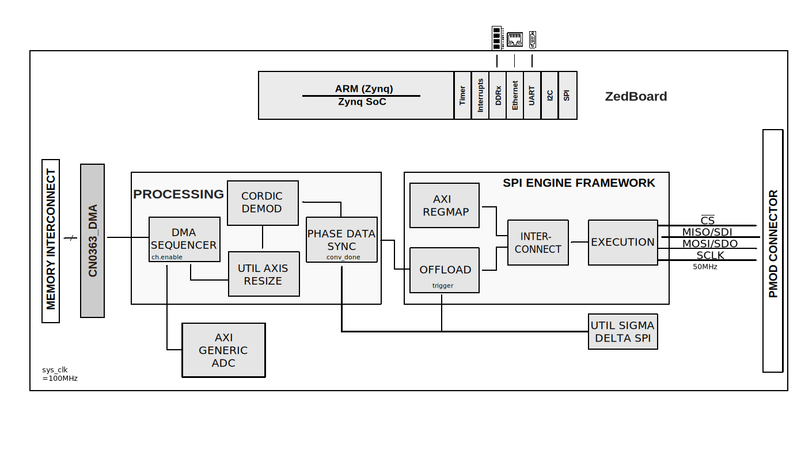

CN0363 HDL project#
Overview#
The EVAL-CN0363-PMDZ is a dual channel colorimeter featuring a modulated light source transmitter, programmable gain transimpedance amplifiers on each channel, and a very low noise, 24-bit sigma delta ADC. The output of the ADC connects via a standard PMOD connector to a FPGA. The FPGA takes the sampled data from the ADC and implements a synchronous detection algorithm. By using modulated light and digital synchronous detection, rather than a constant (dc) source, the system strongly rejects any noise sources at frequencies other than the modulation frequency, providing excellent accuracy.
The dual channel circuit measures the ratio of light absorbed by the liquids in the sample and reference containers at three different wavelengths. This forms the basis of many chemical analysis and environmental monitoring instruments used to measure concentrations and characterize materials through absorption spectroscopy.
The EVAL-CN0363-PMDZ HDL reference design is based on the Analog Devices base reference design for the ZED board. In addition to the base reference design EVAL-CN0363-PMDZ HDL reference design implements function blocks to communicate over a SPI bus with the AD7175-2 Sigma-Delta ADC to configure it and receive the raw ADC data as well a configure the AD5201 digital potentiometer. The data received from the ADC is passed to a processing pipeline which performs a digital synchronous detector and finally write the data to system memory using a DMA. The HDL reference design is also responsible for generating the LED excitation signal. A simplified functional block diagram of the system is given below.
Supported boards#
Supported devices#
Supported carriers#
ZedBoard on PMOD connector
Block design#
Block diagram#
The data path and clock domains are depicted in the below diagram:
{kind=link}
CPU/Memory interconnects addresses#
The addresses are dependent on the architecture of the FPGA, having an offset added to the base address from HDL (see more at HDL Architecture).
Instance |
Address |
|---|---|
axi_adc |
0x43C0_0000 |
spi_cn0363_axi_regmap |
0x44A0_0000 |
axi_dma |
0x44A3_0000 |
I2C connections#
I2C type |
I2C manager instance |
Alias |
Address |
I2C subordinate |
|---|---|---|---|---|
PL |
iic_fmc |
axi_iic_fmc |
0x4162_0000 |
— |
PL |
iic_main |
axi_iic_main |
0x4160_0000 |
— |
SPI connections#
SPI type |
SPI manager instance |
SPI subordinate |
CS |
|---|---|---|---|
PL |
axi_spi_engine |
cn0363 |
0 |
GPIOs#
The Software GPIO number is calculated as follows:
Zynq-7000: if PS7 is used, then offset is 54
GPIO signal |
Direction |
HDL GPIO EMIO |
Software GPIO |
|---|---|---|---|
(from FPGA view) |
Zynq-7000 |
||
spi_sdi |
IN |
34 |
88 |
gain1_o |
OUT |
33 |
87 |
gain0_o |
OUT |
32 |
86 |
Interrupts#
Below are the Programmable Logic interrupts used in this project.
Instance name |
HDL |
Linux Zynq |
Actual Zynq |
|---|---|---|---|
axi_dma |
13 |
57 |
89 |
spi |
12 |
56 |
88 |
Building the HDL project#
The design is built upon ADI’s generic HDL reference design framework. ADI distributes the bit/elf files of these projects as part of the ADI Kuiper Linux. If you want to build the sources, ADI makes them available on the HDL repository. To get the source you must clone the HDL repository, and then build the project as follows:
Linux/Cygwin/WSL
1user@analog:~$ cd hdl/projects/cn0363/zed
2user@analog:~/hdl/projects/cn0363/zed$ make
A more comprehensive build guide can be found in the Build an HDL project user guide.
Resources#
More information#
Support#
Analog Devices, Inc. will provide limited online support for anyone using the reference design with ADI components via the EngineerZone FPGA reference designs forum.
For questions regarding the ADI Linux device drivers, device trees, etc. from our Linux GitHub repository, the team will offer support on the EngineerZone Linux software drivers forum.
For questions concerning the ADI No-OS drivers, from our No-OS GitHub repository, the team will offer support on the EngineerZone microcontroller No-OS drivers forum.
It should be noted, that the older the tools’ versions and release branches are, the lower the chances to receive support from ADI engineers.